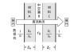

2023年
問題47 下の図のようなA部材とB部材からなる外壁がある．いま，A部材とB部材の厚みと熱伝導率がそれぞれ14cmと1.4W/(m･K) ，5cmと0.2W/(m・K)であり，室内側熱伝達率，屋外側熱伝達率がそれぞれ10W/(m2･K)，20W/(m2･K) であるとする．室内と屋外の温度差が20℃であるとき，この外壁の単位面積当たりの熱流量として，正しいものは次のうちどれか．
（1）0.7 W/m2
（2）1.4 W/m2
（3）10 W/m2
（4）40 W/m2
（5）56 W/m2
2023年
問題47 正解（4） 頻出度AAA
壁を貫流する貫流熱量\(Q\)［W］を求める式は次のとおり． \[Q=\frac{1}{R}(\theta_i-\theta_o)\times S \ \cdots \cdots {\rm 式（1）}\]
一般的に熱貫流抵抗\(R\)は次式で求めることができる（2023-47-1図参照）．

（2）式に与えられた数値を代入して\(R\)［W/(m2･K)］を求める（中空層は今回ないので\(r_B\) = 0）． \begin{align} R&=\frac{1}{\alpha_i}+\frac{\delta_A}{\lambda_A}+r_b+\frac{\delta_C}{\lambda_C}+\frac{1}{\alpha_o} \notag\\[5pt] &=\frac{1}{10}+\frac{0.14}{1.4}+0+\frac{0.05}{0.2}+\frac{1}{20} \notag\\[5pt] &=0.1+0.1+0.25+0.05 \notag\\[5pt] &=0.5 \end{align}
求める単位面積当たりの貫流熱量\(Q\)［W/m2］は，（1）式より，面積\(S\) =1［m2］として， \begin{align} Q&=\frac{1}{R}(\theta_i-\theta_o)\times S \notag\\[5pt] &=\frac{1}{0.5}\times 20 \times 1 \notag\\[5pt] &=2\times 20 \notag\\[5pt] &=40 \end{align}
熱貫流抵抗\(R\)の逆数，\(\displaystyle K=\frac{1}{R}\)を熱貫流率［W/(m2･K)］という．